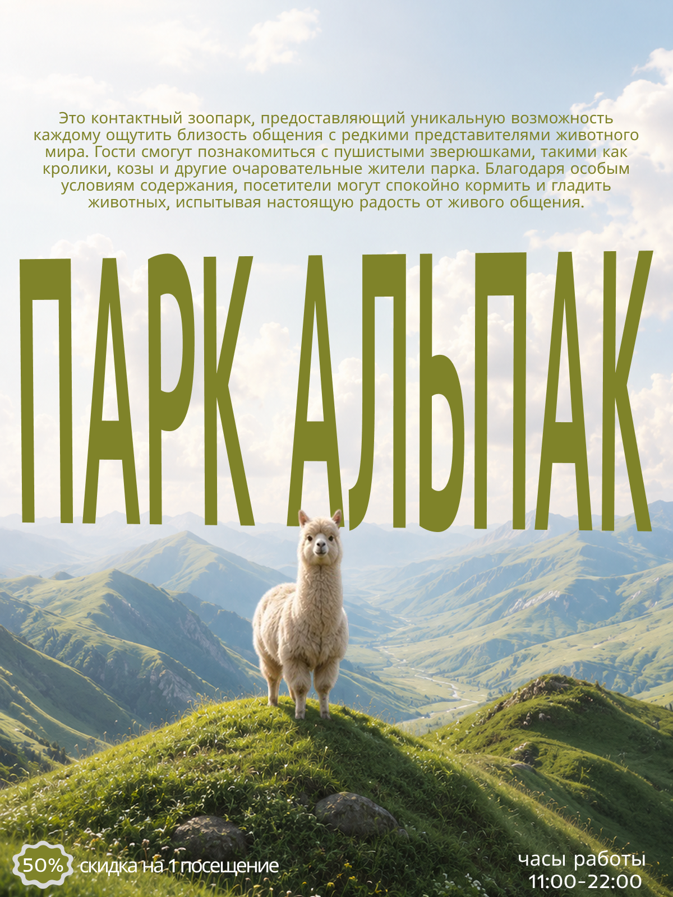
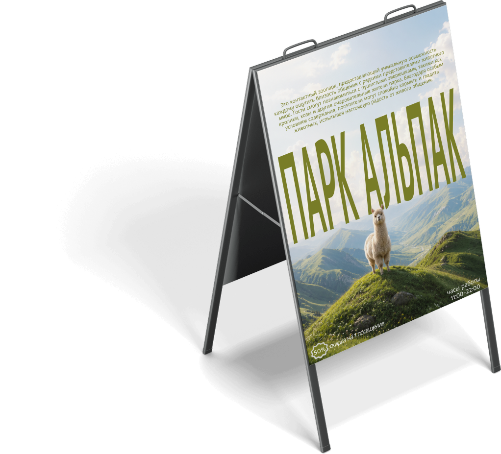
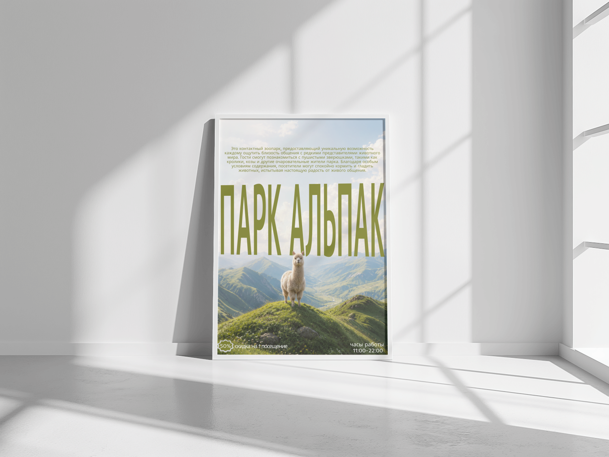
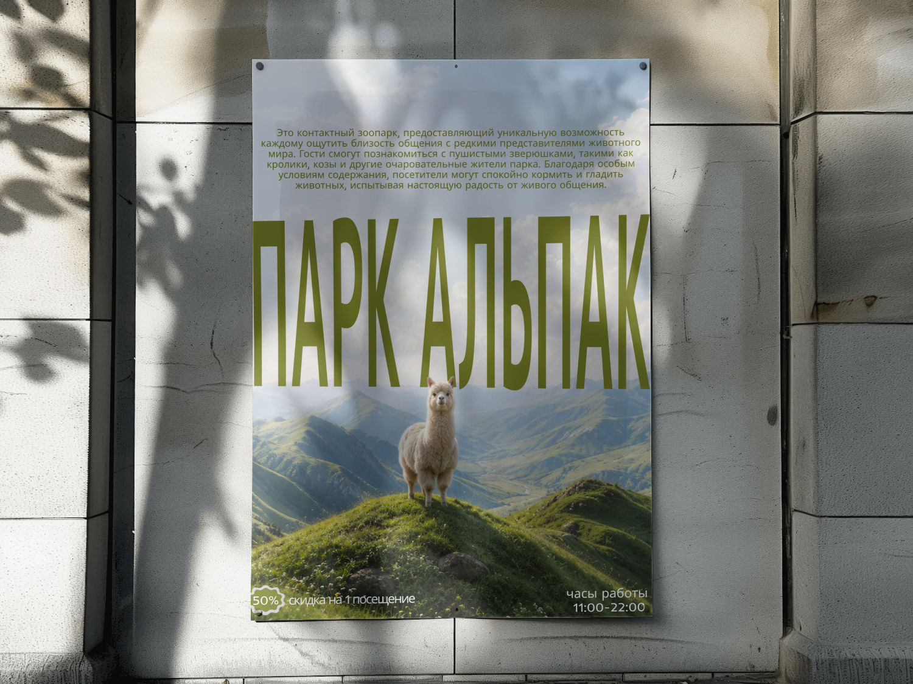

Парк Альпак
Афиша контактного зоопарка «Парк Альпак» — крупный акцент на живом персонаже на фоне горного пейзажа вместо типовой рекламы аттракциона.

- Клиент
- Парк Альпак — контактный зоопарк
- Задача
- Разработать рекламную афишу контактного зоопарка для наружного размещения и штендеров у входа: макет должен доносить суть места (живое общение с животными) и ключевое предложение (скидка 50% на первое посещение) при беглом взгляде прохожего.
- Роль
- Графический дизайнер: концепция, композиция, леттеринг, подбор и обработка фонового изображения, подготовка макета под печатные форматы (штендер, уличный постер).
Реклама контактных зоопарков часто строится на плотном коллаже из разных животных и ярких цветов — задачей было пойти в обратную сторону: один сильный кадр, панорамный горный пейзаж и единственный герой в кадре, смотрящий прямо на зрителя. Это работает на ощущение простора и настоящей природы, а не аттракциона в тесном вольере.
Крупная зелёная надпись «ПАРК АЛЬПАК» размещена поверх пейзажа и частично перекрыта фигурой альпаки — так текст и фото визуально сливаются в один слой, а не выглядят наложенными друг на друга. Описательный блок вынесен наверх мелким шрифтом для тех, кто готов читать подробнее, а самые важные для прохожего вещи — скидка и часы работы — поставлены внизу крупно и коротко, по принципу «одна главная информация на экран».



Афиша обеспечила единое узнаваемое оформление для наружной рекламы парка — от штендеров у входа до расклейки — и чётко доносила ключевое предложение по скидке для прохожих.